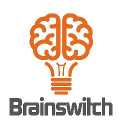

Taller KanbanJaime García y Carlos GilQué es Kanban?Cinco principios de Kanban para que funcioneVisualizarLimitar el trabajo en progresoGestionar y monitorear el flujoEstablecer políticasMejorar ColaborativamenteMuchas gracias por su atención